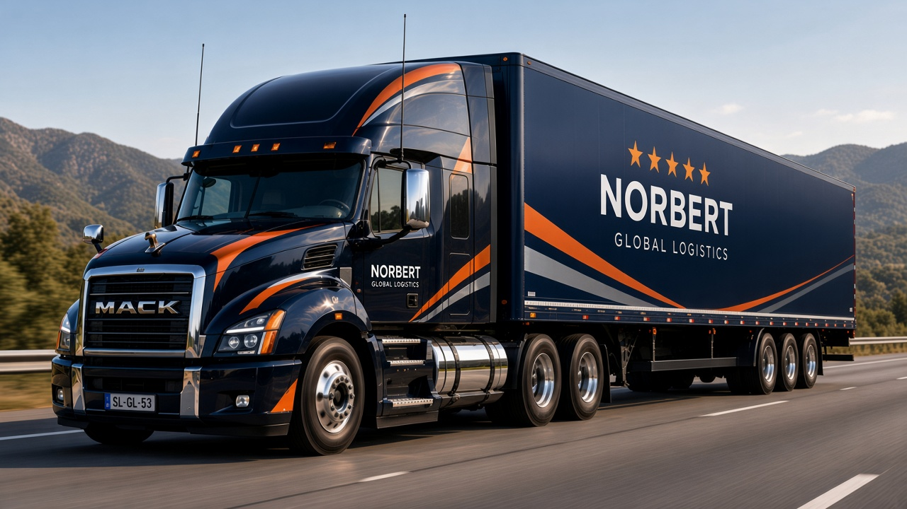
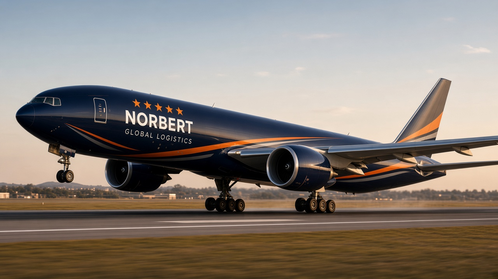
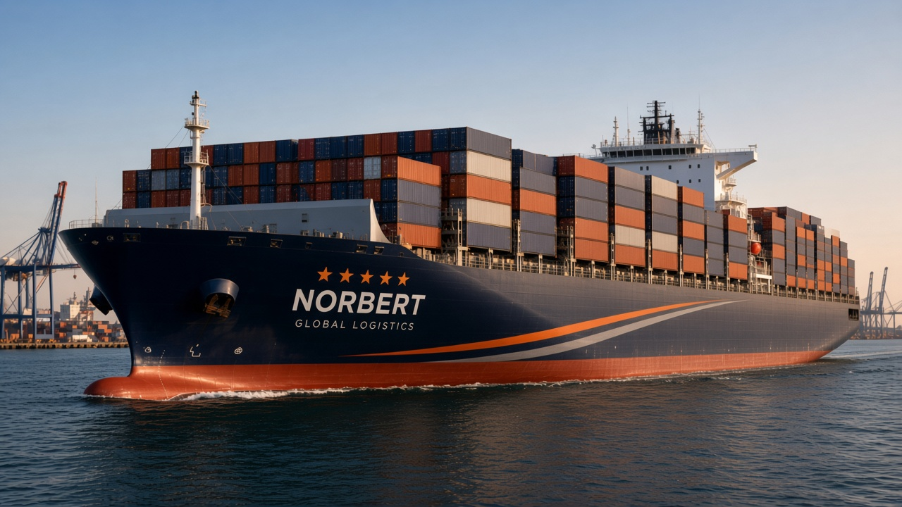
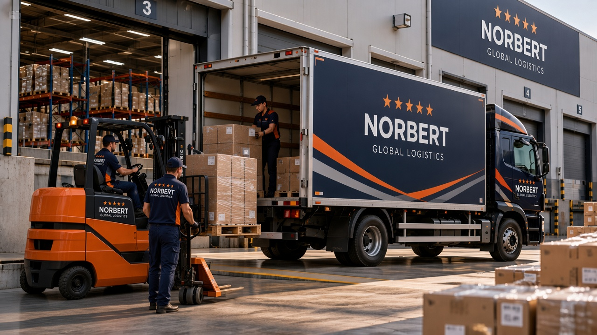
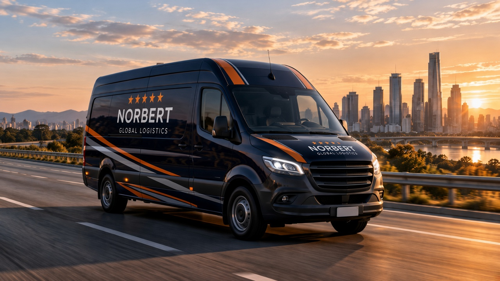

Transporte terrestre
Rutas regionales y transfronterizas con flota coordinada para carga general y proyectos que exigen puntualidad en tierra.
NORBERT
GLOBAL LOGISTICS
Coordinamos transporte terrestre, aéreo y marítimo con operaciones trazables y respuesta ágil para empresas que exportan e importan a escala global.
Soluciones integradas para mover mercadería con tiempos definidos, seguimiento y coordinación en cada etapa del recorrido internacional.

Rutas regionales y transfronterizas con flota coordinada para carga general y proyectos que exigen puntualidad en tierra.

Conexiones ágiles para envíos urgentes o de alto valor, con enlaces a los principales hubs aéreos del mundo.

FCL y LCL con gestión portuaria y documentación alineada a operaciones de importación y exportación a gran escala.

Consolidación, cross-docking y entrega programada para abastecer redes comerciales e industriales con flujos estables.

Entrega final al destinatario con ventanas horarias acordadas y comunicación clara hasta el cierre del pedido.
Articulamos operaciones terrestres, aéreas y marítimas con seguimiento en cada tramo, para mover carga entre origen y destino con coordinación clara en ámbito nacional e internacional.
Coordinación de rutas y enlaces en carretera para tramos puerta a puerta.
Conexiones con vuelos de carga para tramos urgentes o de conexión rápida.
Enlace con líneas marítimas y terminales para movimientos de mayor volumen.
Integración de modos en un solo flujo, con handoff planificado entre tramos.
Una operación conectada de origen a destino, integrando rutas, centros logísticos y transporte en un mismo flujo.
Origen
Hub logístico
Destino
Experiencias de clientes que coordinan sus operaciones con nuestra mesa logística.
★★★★★
Necesitábamos articular un envío con tramo terrestre y conexión aérea. Norbert nos mantuvo informados en cada handoff y la documentación llegó ordenada al destino.
★★★★★
Coordinamos una salida marítima con ventanas ajustadas en puerto. El seguimiento fue claro y pudimos planificar la recepción en planta sin sorpresas de último momento.
★★★★★
Para entregas recurrentes en varias ciudades, valoramos la comunicación directa y los tiempos de respuesta cuando hay un cambio de ruta o de ventana de entrega.
★★★★★
Movimos carga paletizada entre planta y depósito fronterizo con transporte terrestre programado. Los reportes de tránsito nos permitieron ajustar la recepción del lado importador.
★★★★★
Un envío urgente salió por carga aérea con escalas definidas de antemano. La mesa de Norbert confirmó cada conexión y cerró el circuito con entrega en destino dentro del plazo acordado.
★★★★★
Consolidamos pedidos de varios puntos de venta en un flujo de distribución semanal. La planificación de rutas y ventanas de descarga mejoró la rotación en nuestros locales.
★★★★☆
Un accidente en ruta retrasó el camión un día. Nos avisaron al momento, siguieron el tramo alternativo y reprogramaron la descarga sin perder la mercadería en tránsito.
★★★★☆
El operador portuario movió nuestra ventana de embarque. Norbert nos comunicó el cambio, reacomodó la documentación y mantuvo el contenedor dentro del circuito sin costos sorpresa.
★★★★☆
Por tráfico urbano tuvimos que mover la ventana de entrega al cliente final. Avisaron con anticipación, confirmaron la nueva hora y el pedido llegó con el mismo nivel de cuidado en la descarga.
★★★★☆
Una conexión aérea se demoró por condiciones operativas en el hub. Recibimos actualizaciones por tramo, se replanificó el tramo terrestre final y el envío cerró con un día de diferencia.
Completá el formulario para consultar por una operación logística. Indicanos origen, destino y modalidad de transporte y te responderemos a la brevedad.